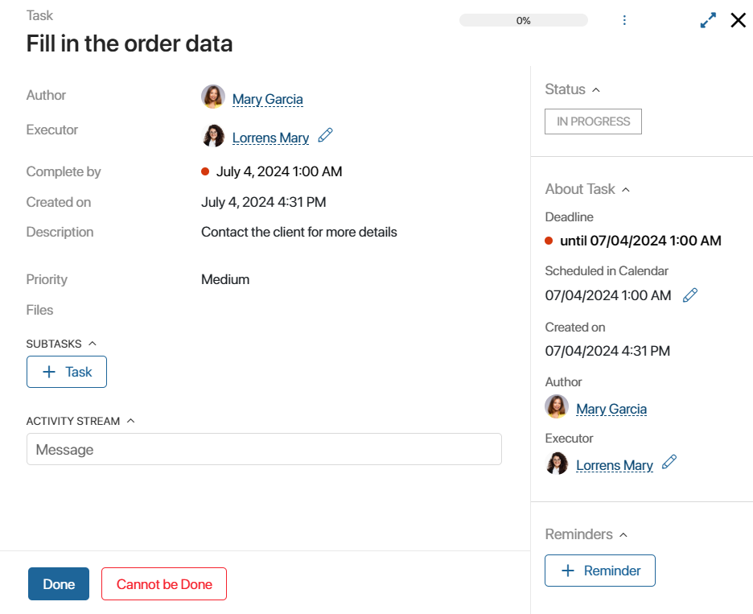
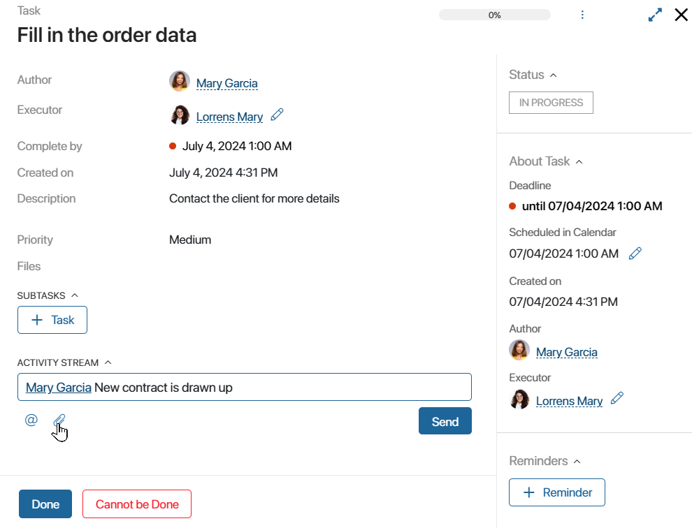
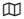
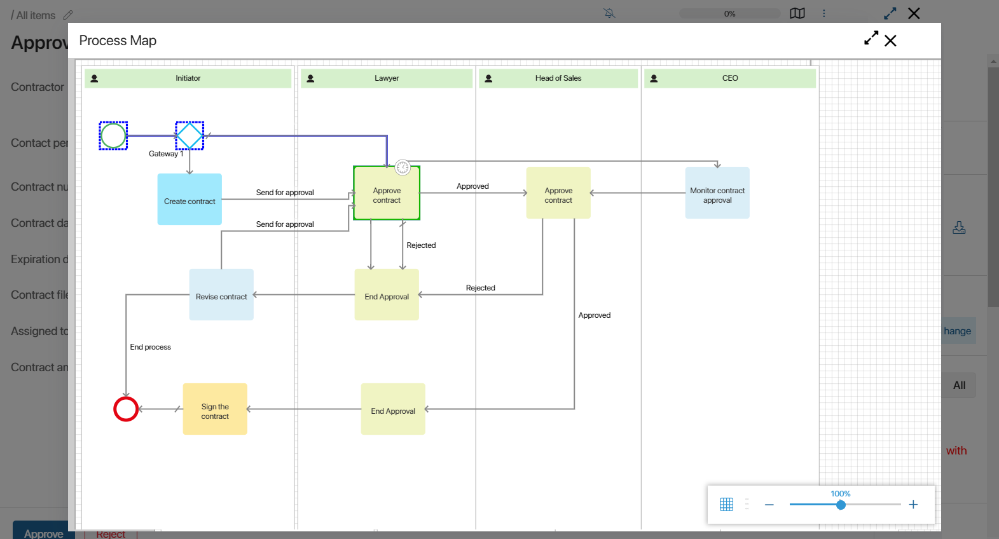
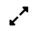
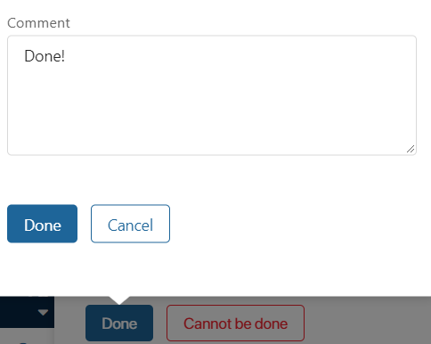
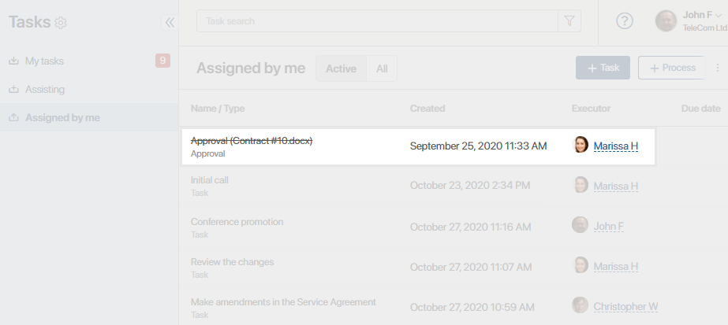
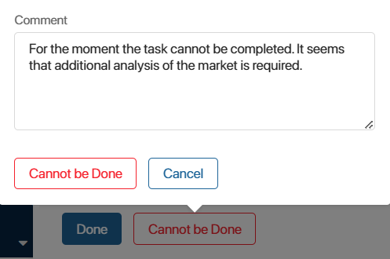

The task page contains all the information necessary to complete the work: author, participants, approvers, deadlines, description, attachments, priority, etc.

A task can be assigned only to you or several executors; this does not affect the page layout. However, the page of a task assigned to several users has special features for the author: they can view the progress of all executors in the summary table. Read more in the Tasks with multiple executors article.
The sidebar of the task page shows:
- The current status of the task, which shows its completion.
- Approval status, if an Approver was specified when creating the task.
- Task details.
- The +Reminder button is displayed for the executor. By clicking on it, they can specify the date and time of reminding about the task in the #Activity stream.
- For tasks assigned to an app item, a link is displayed, which can be used to open its page.
On the top panel of the page, you can see:
- Task progress.
- button to view the process map for tasks assigned within custom business processes.
 icon to open the list of available actions with the task.
icon to open the list of available actions with the task.- icon to open the task in full-screen mode.
In addition, on the page, you can create a subtask or checklist by clicking the +Task button. Read more about it in the Subtasks and checklists article.
Actions with tasks
Users participating in a task can perform various actions with it: reassign, change list of participants, edit deadlines, change task progress, etc.
Read more in the Actions with tasks article.
Task activity stream
The bottom part of the page displays the activity stream. Here you can discuss task-related issues, ask the task creator for more details, add a comment, or attach a document.
The activity stream also stores the entire task history: reassignments, modification of the list of participants, or deadlines.
All the messages are posted to the #Activity stream of all the users participating in the task: author, executors, participants, and approvers.
Process map
On the page of a task executed within a custom business process, you can view the process instance map. The link to it is visible to the administrator, the creator of the process instance, and the executor with the rights to manage the business process.
To open the process map, click the icon  in the top right corner of the task page. A window opens with a map of the process instance within which the task is set.

Using the map, you can keep track of the completed and pending tasks. The completed tasks and their connectors are outlined in blue, and the current operations are outlined in green.
Click the  icon in the top right corner to enable full-screen display mode for the process map.
Complete a task
After you complete the work, click the Done button in the lower left corner of the task page. If you leave a comment, it will appear in the task activity stream.

If a task is assigned to more than one person, you can attach a document. It will be available only to the author of the task in the summary table. For more details, see Tasks with multiple executors.
After the task is completed, the task will not be shown in My Tasks when the Active filter is selected. However, it can always be found in the list of all tasks, where it will be displayed crossed out.

начало внимание
When a coworker completes a task that you have assigned, it will be listed in your Assigned by me section only if you select the All option and will appear crossed out.
конец внимание
If for some reason the task cannot be completed, click Cannot be Done. In a task assigned to multiple users, you can attach a file.

The author will know that there are difficulties in execution and will be able to take the necessary measures to find a way out of the situation in time. If you are the only executor, the author of the task will receive a notification in the #Activity stream. If a task has several executors, instead of receiving a notification, the author will see a new execution status in the results table.
A task can be under the author’s control. In this case, after its completion, the author will receive a notification that the task has been completed. He can also check the results of the task. Read more in the Task control article.
Task status
The side panel of the page displays the current status of the task:
- In progress. The task is in progress. If there are multiple executors, the task remains in this status until all of them complete the work.
- Control. All the specified executors have completed the work, and the author is tasked to control its results. It is used if the Send for evaluation option is selected when creating the task.
- Completed. All the executors have successfully completed the work.
- Partially completed. All the executors have completed the task, but one of them clicked the Cannot be done button. It is used only for tasks with multiple executors.
- Cannot be done. All the specified executors marked the task as impossible to execute when completing it.
- Interrupted. The task is canceled by the author.
On the page of a task assigned to several users, the general status of the task is displayed in the sidebar, but not the task progress of an individual executor. The author can see the progress and results of each employee’s work in the summary table. Read more in the Tasks with multiple executors article.
Found a typo? Select it and press Ctrl+Enter to send us feedback